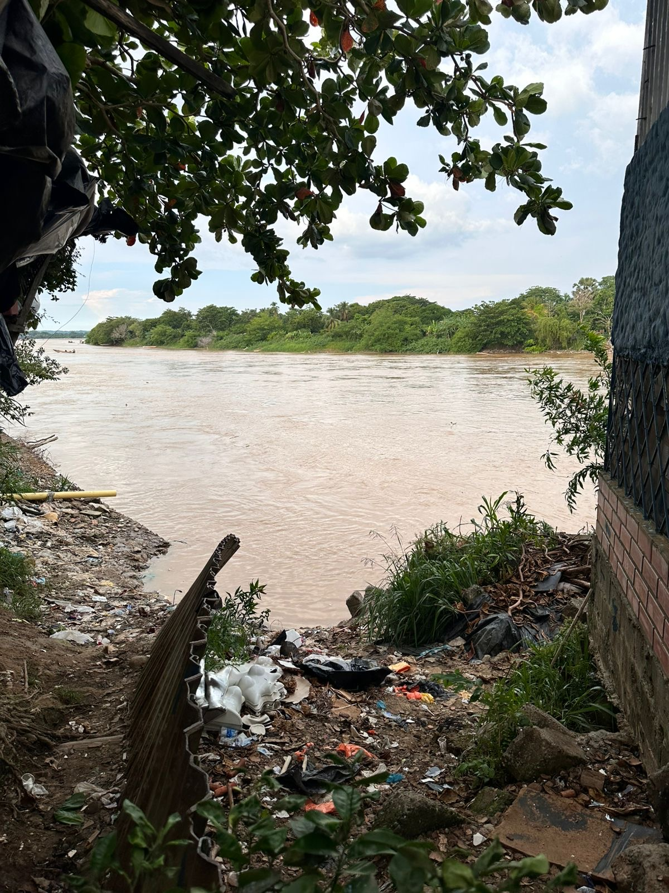

01 / Learn
One river. Many lives.
The Cauca connects ecosystems, communities, wildlife, agriculture and cities. What happens to the water can matter far beyond one location.

Cauca River · real field photograph · Caucasia, Antioquia
Why it matters
When the land changes, the river feels it.
Illegal mining can involve excavation, vegetation loss, increased sediment and, in some contexts, hazardous substances such as mercury.
1
Land gets disturbedExcavation can reshape soil, riverbanks and habitats.
2
Water carries materialSediment and pollutants can move through connected waterways.
3
Life is affectedPlants, animals and communities can feel the consequences.
Guardian rule: knowledge comes first. You cannot protect what you do not understand.